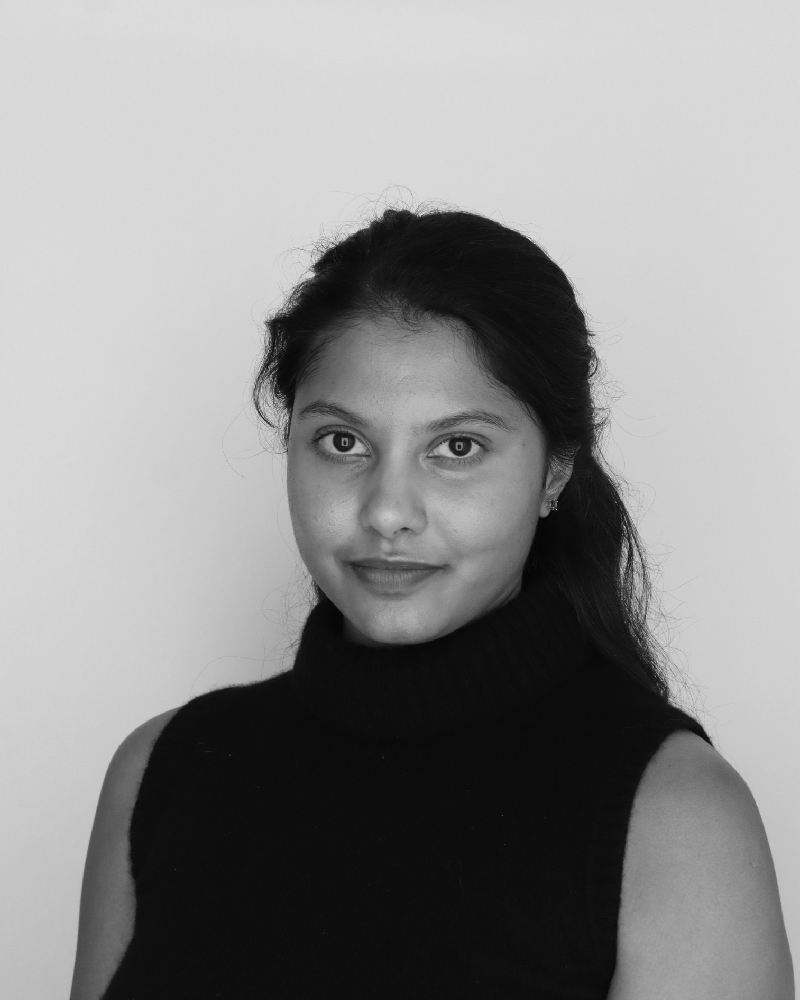

I am a Ph.D. student in Computer Science at the University of California, Berkeley. My primary research area is quantum complexity theory, and I am fortunate to be co-advised by Umesh Vazirani and John Wright.
Before starting my Ph.D. at Berkeley, I completed my M.Eng. in Electrical Engineering and Computer Science at MIT, where I was advised by Aram Harrow. My thesis, Pretending to be Quantum: A Study of IQP-Based Tests of Quantumness, studied protocols proposed to prove the quantum capabilities of near-term quantum devices. In particular, I demonstrated how such tests can fail by constructing classical forging attacks.
Outside of research, I enjoy windsurfing at the Berkeley Marina and learning to play the drums.
Research Interests
My research studies the power of shallow quantum circuits, especially QAC0 circuits, which are particularly relevant in the current NISQ era where quantum devices are noisy and depth-limited. The question that keeps me up at night is whether these circuits can implement fanout. This question sits at the center of our understanding of their power: it shapes how they compare with classical circuits and whether they can perform inherently quantum tasks such as preparing entanglement resources like GHZ states and Dicke states.
I am drawn to foundational questions about physics and computation. This is why my main focus is quantum complexity: it gives a way to ask, with mathematical precision, what quantum systems can compute, what resources they need, and where the boundaries of efficient quantum computation lie. I also enjoy connecting the insights I learn from these questions to real-world applications in cryptography and privacy.
Publications
-
Parity ∉ QAC0 iff QAC0 is Fourier-Concentrated
Lucas Gretta, Meghal Gupta, and Malvika Raj Joshi.
arXiv preprint -
Super-Constant Dicke States in Constant Depth Without Fanout
Lucas Gretta, Meghal Gupta, and Malvika Raj Joshi.
arXiv preprint -
Improved Lower Bounds for QAC0
Malvika Raj Joshi, Avishay Tal, Francisca Vasconcelos, and John Wright.
arXiv -
Constant-Depth Unitary Preparation of Dicke States
Malvika Raj Joshi and Francisca Vasconcelos.
arXiv preprint -
Improved Merlin–Arthur Protocols for Central Problems in Fine-Grained Complexity
Shyan Akmal, Lijie Chen, Ce Jin, Malvika Raj, and Ryan Williams.
Proceedings, ECCC
Selected Industry Experience
Applied Scientist Intern, Amazon Designed Lexicure, a leakage-free encrypted lexical search protocol with improved communication tradeoffs and new secure primitives for higher-degree arithmetic. With Tal Wagner, Shai Halevi, and Nina Mishra; manuscript under submission.
Open Source Software Development Intern, PyTorch
Designed and implemented a C++ API for PyTorch Autograd, introducing native C++ support for automatic differentiation using template metaprogramming.
PyTorch contributions
For additional research, software engineering, outreach, and teaching experience, see my CV.